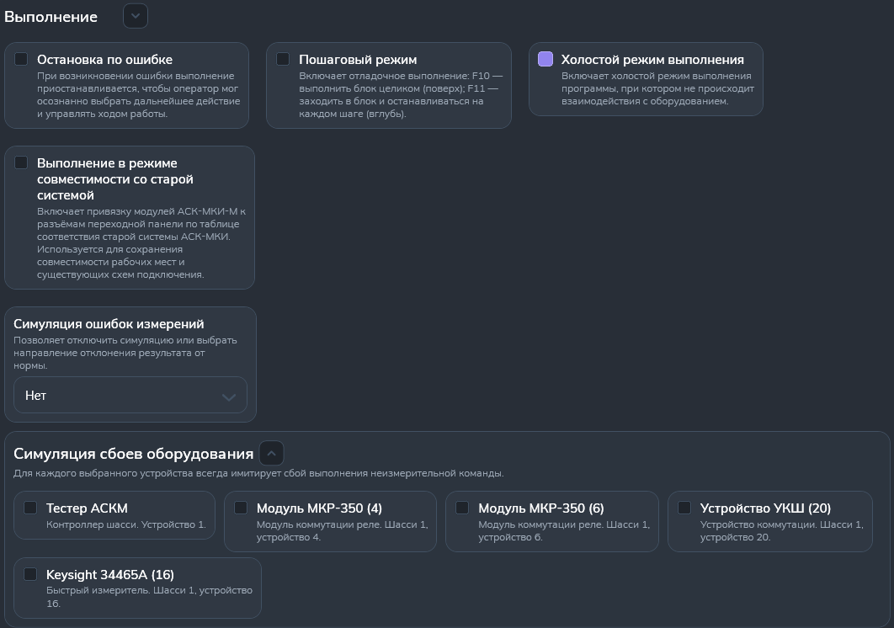

Раздел "Выполнение"
Раздел предназначен для настройки работы программы с тестами.
На рисунке 1 показано содержание раздела.

Холостой режим
- Опция "Холостой режим выполнения" задает холостой режим выполнения ПК и тестов. Обычно режим используется при отладке ПОАСК, но может также использоваться в демонстрационных целях, при изучении работы ПОАСК.
-
Настройка "Симуляция ошибок измерения" нужна для имитации ошибок измерения. На выбор представлены следующие варианты:
- "Нет" - симуляция выключена;
- "Случайно" - ошибки измерения могут быть выше и ниже нормы. Вероятность выпадения обоих случаев - 50%;
- "Выше нормы" - ошибки измерения всегда будут выше заданной нормы;
- "Ниже нормы" - ошибки измерения всегда будут ниже заданной нормы.
- Настройка "Симуляция сбоев оборудования" нужна для имитации сбоя выполнения неизмерительной команды. В списке будут отображаться актуальные устройства, прямо сейчас заданные в системе.
Выполнение режимов
- Опция "Пошаговый режим" используется только при отладке АСК (при выполнении как ПК, так и тестов). При установке этой опции будет производиться останов в начале цикла очередного обмена с аппаратурой.
-
Опция "Остановка по ошибке" влияет как на выполнение ПК, так и
тестов (утилит). Опция требует производить останов:
- при выполнении ПК - по обнаружению ошибки в ОК. Останов производится по завершению выполнения команды, обнаружившей ошибку (ошибки). Останов по нарушению режимов контроля производится независимо от состояния этой опции;
- при выполнении теста - при обнаружении сбоя на очередном этапе теста. Останов производится после выполнения этапа теста, при выполнении которого был обнаружен сбой.
- Опция "Выполнение в режиме совместимости со старой системой" предназначен для выполнения программ контроля, созданных в старой АСК‑МКИ. Адреса 100-точечных модулей автоматически преобразуются в адреса модулей, настроенных в текущей системе.